Sesión 5: Componentes (2)
Contenedores
Window
Las ventanas contienen otros elementos en su interior.
Atributos y elementos más importantes:
- title: El título de la ventana
- caption: Grupo de elementos en la parte derecha del título (puede contener una imagen como atributo)
- closable: Booleano que indica que la ventana puede ser cerrada (evento relacionado: onClose)
- sizable: Booleano que indica que el tamaño de la ventana puede ser modificado (evento relacionado: onSize)
- contentStyle: permite definir scroll con overflow:auto
- mode: modo de aparición
- toolbar: barra de herramientas en el panel
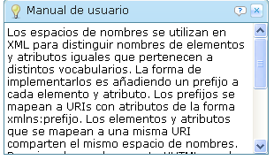
<window title=" Manual de usuario" border="normal" width="300px"
closable="true" sizable="true" contentStyle="overflow:auto">
<caption image="images/light-bulb.png">
<toolbarbutton image="images/question.png" />
</caption>
Los espacios de nombres se utilizan en XML para distinguir nombres
de elementos y atributos iguales que pertenecen a distintos
vocabularios. La forma de implementarlos es añadiendo un prefijo a
cada elemento y atributo. Los prefijos se mapean a URIs con
atributos de la forma xmlns:prefijo. Los elementos y atributos que
se mapean a una misma URI comparten el mismo espacio de nombres.
Por ejemplo, un documento XHTML puede contener dibujos SVG y
ecuaciones MathML y ambos contienen elementos con el mismo nombre.
Un documento ZUML puede contener elementos XHTML y elementos ZUL
con el mismo nombre. Es necesario identificar el espacio de
nombres al que pertenece cada elemento para reconocer si se trata
de uno u otro caso.
</window>
Las ventanas pueden vivir en la página con distintos modos de aparición:
- Embed: embebido en otros componentes
- Overlap: solapada con otros componentes; el usuario puede moverla
- Popup: igual que overlap, con la diferencia de que la ventana se cierra si el usuario pincha en otra parte
- Modal: igual que overlap, pero se suspende la ejecución del resto de componentes y el usuario no puede interactuar con ellos. Si se llama en código zscript a win.doModal() se suspende la ejecución de la siguiente instrucción hasta que la ventana no se cierra.
- Highlighted: igual que modal, con la diferencia de que no se suspende la ejecución.
Podemos probar a poner el identificador win en la ventana anterior y añadir estos botones para probar todos los modos:
<button label="Overlap" onClick="win.doOverlapped();"/>
<button label="Popup" onClick="win.doPopup();"/>
<button label="Modal" onClick="win.doModal();"/>
<button label="Embed" onClick="win.doEmbedded();"/>
<button label="Highlighted" onClick="win.doHighlighted();"/>
Panel
Un panel es un elemento parecido a las ventanas, pero con algunas características propias que le hacen el elemento perfecto para componer las interfaces de usuario.
Atributos:
- title: El título del panel
- caption: Grupo de elementos en la parte derecha del título (puede contener una imagen como atributo)
- framable: Booleano que indica si el panel tiene un aspecto redondeado
- closable: Booleano que indica que el panel puede ser cerrado (evento relacionado: onClose)
- collapsible: Booleano que indica si puede ser colapsado
- open: Booleano que indica el estado inicial del panel
- maximizable: Boolean que indica si puede ser maximizable
- maximized: Booleano que indica si el panel está inicialmente maximizado
- minimizable: Booleano que indica si puede ser minimizable
- minimized: Booleano que indica si el panel está inicialmente minimizado
- floatable: Booleano que indica si el flota sobre el resto de componentes
- movable: Booleano que indica si el usuario puede moverlo
Elementos:
- panelchildren: contenedor en el que se define el contenido del panel
- caption: contenedor que define un grupo de elementos a la derecha del título
- toolbar: barra de herramientas en el panel
Ejemplo:
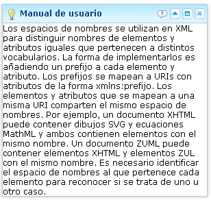
<panel title=" Manual de usuario" border="normal" width="300px"
closable="true" collapsible="true" maximizable="true" floatable="true"
movable="true">
<caption image="images/light-bulb.png">
<toolbarbutton image="images/question.png" />
</caption>
<panelchildren>
Los espacios de nombres se utilizan en XML para distinguir nombres
de elementos y atributos iguales que pertenecen a distintos
vocabularios. La forma de implementarlos es añadiendo un prefijo a
cada elemento y atributo. Los prefijos se mapean a URIs con
atributos de la forma xmlns:prefijo. Los elementos y atributos que
se mapean a una misma URI comparten el mismo espacio de nombres.
Por ejemplo, un documento XHTML puede contener dibujos SVG y
ecuaciones MathML y ambos contienen elementos con el mismo nombre.
Un documento ZUML puede contener elementos XHTML y elementos ZUL
con el mismo nombre. Es necesario identificar el espacio de
nombres al que pertenece cada elemento para reconocer si se trata
de uno u otro caso.
</panelchildren>
</panel>
Pestañas
Con el elemento tabbox podemos definir un conjunto de pestañas.
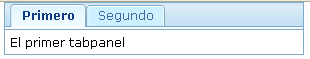
<tabbox>
<tabs>
<tab label="Primero"/>
<tab label="Segundo"/>
</tabs>
<tabpanels>
<tabpanel>El primer panel</tabpanel>
<tabpanel>El segundo panel</tabpanel>
</tabpanels>
</tabbox>
Podemos cambiar el panel seleccionado de dos formas:
- Llamando al método setSelected() del Tab que queremos seleccionar
- Llamando al método setSelectedTab(Tab) del Tabbox
Disposición
En ZK se definen distintos gestores de disposición de los componentes en los contenedores: modelo de caja, de bordes, tablas de paneles y agrupaciones.
Vamos a ver un ejemplo de cada uno.
Modelo de caja
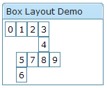
<window title="Box Layout Demo" border="normal">
<hbox spacing="0">
<window border="normal">0</window>
<vbox spacing="0">
<hbox spacing="0">
<window border="normal">1</window>
<window border="normal">2</window>
<vbox spacing="0">
<window border="normal">3</window>
<window border="normal">4</window>
</vbox>
</hbox>
<hbox spacing="0">
<vbox spacing="0">
<window border="normal">5</window>
<window border="normal">6</window>
</vbox>
<window border="normal">7</window>
<window border="normal">8</window>
<window border="normal">9</window>
</hbox>
</vbox>
</hbox>
</window>
Modelo de bordes
El modelo de bordes es idéntico al utilizando en Swing. Define cinco zonas: north, center, south, east y west. Distribuimos los componentes colocándolos en cada una de las zonas. Es posible también definir restricciones de tamaño máximo y mínimo en las zonas.
Atributos de cada borde:
- splittable: indica si el borde puede ser movido por el usuario
- maxsize, minsize: tamaño máximo y mínimo del panel
- size: tamaño (en pixeles o %)
Ejemplo:
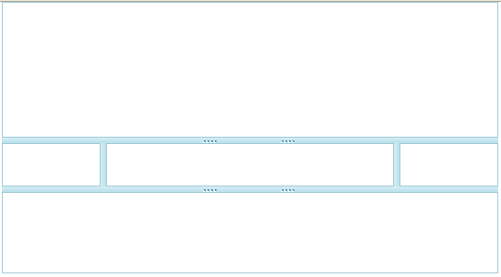
<borderlayout height="500px"> <north size="20%" splittable="true" collapsible="true"/> <east size="20%" splittable="true" collapsible="true" /> <center border="normal" /> <west size="20%" splittable="true" collapsible="true" /> <south size="30%" border="normal" splittable="true" collapsible="true" /> </borderlayout>
Tablas de paneles
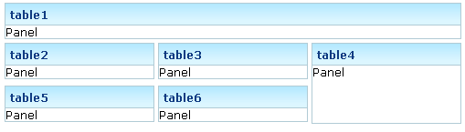
<tablelayout columns="3">
<tablechildren colspan="3">
<panel width="500px" title="table1" border="normal">
<panelchildren>Panel</panelchildren>
</panel>
</tablechildren>
<tablechildren>
<panel title="table2" border="normal">
<panelchildren>Panel</panelchildren>
</panel>
</tablechildren>
<tablechildren>
<panel title="table3" border="normal">
<panelchildren>Panel</panelchildren>
</panel>
</tablechildren>
<tablechildren rowspan="2">
<panel title="table4" border="normal" height="90px">
<panelchildren>Panel</panelchildren>
</panel>
</tablechildren>
<tablechildren>
<panel title="table5" border="normal">
<panelchildren>Panel</panelchildren>
</panel>
</tablechildren>
<tablechildren>
<panel title="table6" border="normal">
<panelchildren>Panel</panelchildren>
</panel>
</tablechildren>
</tablelayout>
Múltiples ítems
Listas
El componente listbox define una lista de ítems entre los que el usuario puede seleccionar uno o más.
Atributos:
- maxlength: máxima longitud en caracteres de las etiquetas de los ítems
- multiple: permite la selección de múltiples ítems
- checkmark: se muestra una marca de chequeo en cada ítem
- rows: número de filas de la lista; se muestra una barra de scroll si hay más ítems
Componentes:
- listhead: cabecera de la lista
- listitem: item de la lista
- listcell: celda del ítem
- listfoot: pie de página de la lista
Ejemplo:
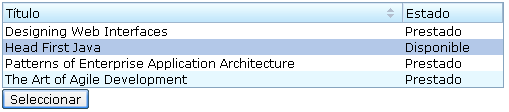
<?page title="Listas" contentType="text/html;charset=UTF-8"?>
<zk>
<window title="Listas" border="normal">
<zscript><![CDATA[
void doSelect() {
int seleccionado = libros.getSelectedIndex();
String titulo = libros.getItemAtIndex(seleccionado).getLabel();
alert(titulo);
}
]]></zscript>
<listbox id="libros" width="500px">
<listhead>
<listheader width="80%" label="Título" sort="auto" />
<listheader label="Estado" />
</listhead>
<listitem>
<listcell label="Designing Web Interfaces" />
<listcell label="Prestado" />
</listitem>
<listitem>
<listcell label="Head First Java" />
<listcell label="Disponible" />
</listitem>
<listitem>
<listcell label="Patterns of Enterprise Application Architecture" />
<listcell label="Prestado" />
</listitem>
<listitem>
<listcell label="The Art of Agile Development" />
<listcell label="Prestado" />
</listitem>
</listbox>
<button label="Seleccionar" onClick="doSelect()" />
</window>
</zk>
Otro ejemplo en el que se combinan dos listas y dos botones para construir una interfaz en la que se permite mover ítems de una lista a otra:
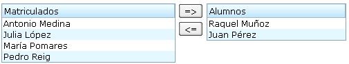
<hbox>
<listbox id="src" width="250px" >
<listhead>
<listheader label="Matriculados" />
</listhead>
<listitem>
<listcell label="Antonio Medina" />
</listitem>
<listitem>
<listcell label="Julia López" />
</listitem>
<listitem>
<listcell label="María Pomares" />
</listitem>
<listitem id="d" value="D">
<listcell label="Pedro Reig" />
</listitem>
</listbox>
<vbox>
<button label="=>" onClick="move(src, dst)" />
<button label="<=" onClick="move(dst, src)" />
</vbox>
<listbox id="dst" width="200px">
<listhead>
<listheader label="Alumnos" />
</listhead>
<listitem>
<listcell label="Raquel Muñoz" />
</listitem>
<listitem>
<listcell label="Juan Pérez" />
</listitem>
</listbox>
<zscript>
void move(Listbox src, Listbox dst) {
Listitem s = src.getSelectedItem();
if (s == null)
Messagebox.show("Select an item first");
else
s.setParent(dst);
}
</zscript>
</hbox>
Grid
El componente grid permite disponer ítems en una rejilla. Es muy útil para presentar datos y para construir formularios.
Los ítems están alineados en filas y columnas. Se definen las columnas y en cada fila hay que colocar tantos componentes como columnas se han definido. Es posible que una celda ocupe más de una fila y columna utilizando el atributo span.
Atributos:
- height: si se especifica la altura y no caben los componentes aparece una barra de scroll; pasa igual con el ancho (width)
- sizable: valor booleano que indica si el usuario puede modificar el tamaño de las columnas
Componentes:
- auxheader: cabeceras auxiliares
- columns: columnas
- column: cada una de las columnas
- rows: filas
- row: cada una de las filas
Ejemplo de una rejilla sencilla:
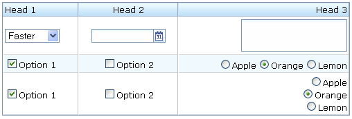
<grid width="500px">
<columns>
<column label="Head 1"/>
<column label="Head 2" align="center"/>
<column label="Head 3" align="right"/>
</columns>
<rows>
<row>
<listbox mold="select">
<listitem label="Faster"/>
<listitem label="Fast"/>
<listitem label="Average"/>
</listbox>
<datebox/>
<textbox rows="2"/>
</row>
<row>
<checkbox checked="true" label="Option 1"/>
<checkbox label="Option 2"/>
<radiogroup>
<radio label="Apple"/>
<radio label="Orange" checked="true"/>
<radio label="Lemon"/>
</radiogroup>
</row>
<row>
<checkbox checked="true" label="Option 1"/>
<checkbox label="Option 2"/>
<radiogroup orient="vertical">
<radio label="Apple"/>
<radio label="Orange" checked="true"/>
<radio label="Lemon"/>
</radiogroup>
</row>
</rows>
</grid>
Ejemplo de un grid con celdas que ocupan varias filas y columnas utilizando la etiqueta span:
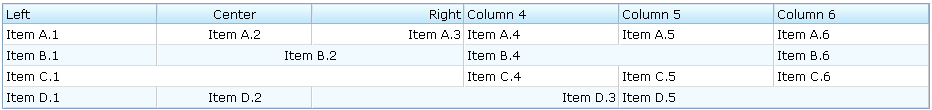
<grid>
<columns>
<column label="Left" align="left"/><column label="Center" align="center"/>
<column label="Right" align="right"/><column label="Column 4"/>
<column label="Column 5"/><column label="Column 6"/>
</columns>
<rows>
<row>
<label value="Item A.1"/><label value="Item A.2"/>
<label value="Item A.3"/><label value="Item A.4"/>
<label value="Item A.5"/><label value="Item A.6"/>
</row>
<row spans="1,2,2">
<label value="Item B.1"/><label value="Item B.2"/>
<label value="Item B.4"/><label value="Item B.6"/>
</row>
<row spans="3">
<label value="Item C.1"/><label value="Item C.4"/>
<label value="Item C.5"/><label value="Item C.6"/>
</row>
<row spans=",,2,2">
<label value="Item D.1"/><label value="Item D.2"/>
<label value="Item D.3"/><label value="Item D.5"/>
</row>
</rows>
</grid>
Ejemplo de un grid con columnas auxiliares:
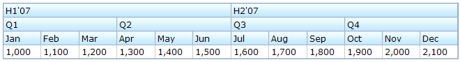
<grid>
<auxhead>
<auxheader label="H1'07" colspan="6"/>
<auxheader label="H2'07" colspan="6"/>
</auxhead>
<auxhead>
<auxheader label="Q1" colspan="3"/>
<auxheader label="Q2" colspan="3"/>
<auxheader label="Q3" colspan="3"/>
<auxheader label="Q4" colspan="3"/>
</auxhead>
<columns>
<column label="Jan"/><column label="Feb"/><column label="Mar"/>
<column label="Apr"/><column label="May"/><column label="Jun"/>
<column label="Jul"/><column label="Aug"/><column label="Sep"/>
<column label="Oct"/><column label="Nov"/><column label="Dec"/>
</columns>
<rows>
<row>
<label value="1,000"/><label value="1,100"/><label value="1,200"/>
<label value="1,300"/><label value="1,400"/><label value="1,500"/>
<label value="1,600"/><label value="1,700"/><label value="1,800"/>
<label value="1,900"/><label value="2,000"/><label value="2,100"/>
</row>
</rows>
</grid>
Ejemplo de un grid que define un formulario HTML:
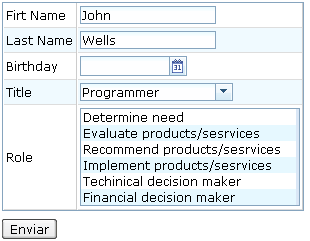
<h:form id="updateForm" action="/updateProfile" xmlns:h="http://www.w3.org/1999/xhtml">
<grid width="400px">
<rows>
<row>Firt Name <textbox id="firstName" name="firstName"
value="John" constraint="no empty"/>
</row>
<row>Last Name <textbox id="lastName" name="lastName"
value="Wells" constraint="no empty"/>
</row>
<row>Birthday <datebox id="birthday" name="birthday"
constraint="no empty"/></row>
<row>Title
<combobox id="title" name="title" value="Programmer" constraint="no empty">
<comboitem label="Programmer" description="Software developer"/>
<comboitem label="Architect" description="Software architect"/>
<comboitem label="Project Manager" description="Techinical lead, project manager"/>
</combobox>
</row>
<row>Role
<listbox name="role" multiple="true">
<listitem value="1" label="Determine need"/>
<listitem value="2" label="Evaluate products/sesrvices"/>
<listitem value="3" label="Recommend products/sesrvices"/>
<listitem value="4" label="Implement products/sesrvices"/>
<listitem value="5" label="Techinical decision maker"/>
<listitem value="6" label="Financial decision maker"/>
</listbox>
</row>
<row>
<button label="Update" onClick="update()"/>
<h:input type="reset"/>
</row>
</rows>
</grid>
<zscript><![CDATA[ void update() {
//validate data
firstName.getValue();
lastName.getValue();
birthday.getValue();
title.getValue();
//submit the form
Clients.submitForm(updateForm);
}
]]></zscript>
</h:form>
Contenido dinámico
Vimos que era posible utilizar el atributo foreach para realizar una iteración por una colección y contruir los ítems de una lista en tiempo de carga de una página. El problema de este enfoque es que sólo funciona en el momento de la carga de la página. Si después realizamos modificaciones en la colección Java con la que está asociada la lista, la lista no se actualiza.
Una forma de solucionar el problema es actualizando manualmente el componente y los datos. El siguiente ejemplo muestra cómo se podría hacer.
El código zscript crea una variable personas donde se guarda el modelo; la lista de personas que deben mostrarse por pantalla. También se define la función add() que añade una nueva persona a la colección Java y al componente (listbox).
Para inicializar el componente listbox utilizamos los elementos ZK foreach y each para iterar por la colección. Después, añadimos nuevos elementos tanto en el arrayList (modelo) como en el listitem (vista).
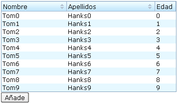
<window title="Actualizar vista" border="normal">
<zscript><![CDATA[
import model.Persona;
ArrayList personas = new ArrayList();
for (int j = 0; j < 10; j++) {
Persona p = new Persona("Tom"+j,
"Hanks"+k, j);
personas.add(p);
}
void add() {
int i = personas.size();
Persona p = new Persona("Tom"+i,
"Hanks"+i,i);
personas.add(p);
// insert a new item into the listbox
Listitem li = new Listitem();
// insertamos el objeto persona como valor;
// para poder utilizarlo si lo necesitamos
li.setValue(p)
// creamos las celdas y rellenamos su contenido
li.appendChild(new Listcell(p.getNombre()));
li.appendChild(new Listcell(p.getApellidos()));
li.appendChild(new Listcell(Integer.toString(p.getEdad())));
lista.appendChild(li);
}
]]></zscript>
<listbox width="300px" id="lista">
<listhead>
<listheader label="Nombre" sort="auto" />
<listheader label="Apellidos" sort="auto" />
<listheader label="Edad"/>
</listhead>
<listitem forEach="${personas}">
<listcell label="${each.nombre}" />
<listcell label="${each.apellidos}" />
<listcell label="${each.edad}" />
</listitem>
</listbox>
<button label="Añade" onClick="add()" />
</window>
Paginado
Para paginar un componente de datos como una lista o un grid basta con definir el mold paging indicando el número de elementos de cada página. ZK calcula automáticamente las páginas a partir del número de elementos del listbox y coloca los botones de paginado en la lista o rejilla:
Para ver un ejemplo, bastan con modificar en el ejemplo anterior la declaración de la lista, añadiéndole el mold paging:
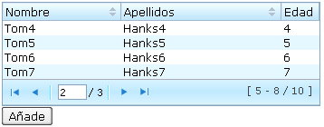
<listbox width="300px" id="lista" mold="paging" pageSize="4">
Con este enfoque tenemos que tener todos los datos cargados en la interfaz de usuario. Si estamos paginando un gran número de datos y queremos que la paginación obtenga nuevos datos del modelo (o de la base de datos) y actualice la interfaz modificando los datos que hay cargados en la lista, este enfoque no sirve. Veremos en el apartado de Data Binding cómo hacerlo utilizando el componente paging
Árboles
El componente tree permite definir elementos en forma de árbol, así como añadir columnas. Por simplificar, vamos a ver únicamente algún ejemplo en el que definimos los elementos. El funcionamiento de las columnas es muy similar al del componente grid.
Atributos y componentes incluidos:
- open: atributo boolean de los treeitem que indica si un subárbol está abierto inicialimente o no
- treeitem: cada uno de los ítems del árbol; puede contener una etiqueta o una imagen
- treechildren: componente que agrupa un subárbol. Se define dentro de un treeitem y contiene, a su vez, otros treeitems
Entre los eventos procesados por el árbol se encuentran:
- onOpen: el usuario ha abierto un subárbol
- onSelect: el usuario ha seleccionado un ítem. El evento generado es un objeto de la clase SelectEvent.
Un árbol sencillo:
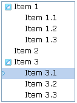
<zscript>
void doSelect() {
Set setItems = tree.getSelectedItems();
Iterator it = setItems.iterator();
String str="";
while (it.hasNext()) {
Treeitem tItem = (Treeitem) it.next();
str += tItem.getLabel() + " ";
}
alert(str);
}</zscript>
<tree id="tree" multiple="true" width="120px" onSelect="doSelect()">
<treechildren>
<treeitem label="Item 1">
<treechildren>
<treeitem label="Item 1.1" />
<treeitem label="Item 1.2" />
<treeitem label="Item 1.3" />
</treechildren>
</treeitem>
<treeitem label="Item 2" />
<treeitem label="Item 3">
<treechildren>
<treeitem label="Item 3.1" />
<treeitem label="Item 3.2" />
<treeitem label="Item 3.3" />
</treechildren>
</treeitem>
</treechildren>
</tree>
Menús
Barra de menús
El componente menubar permite definir una barra de menús desplegables. Está compuesto de menupopup asociados a objetos menu. Cada menupopu contiene un grupo de menuitem.
En muchas ocasiones las opciones del menú necesitan cambiar alguna zona de la interfaz de usuario, cargando un nuevo fichero ZUL en ella. Una forma de hacer esto es modificando el atributo src de la instrucción include que previamente ha cargado esa zona a modificar. También es posible utilizar una instrucción include vacía como indicador del lugar en el que van a ir los nuevos componentes creados por la página.
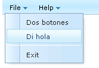
<zk>
<menubar>
<menu label="File">
<menupopup>
<menuitem label="Dos botones">
<attribute name="onClick">
principal.src = "dos-botones.zul";
</attribute>
</menuitem>
<menuitem label="Di hola">
<attribute name="onClick">
principal.src = "di-hola.zul";
</attribute>
</menuitem>
<menuseparator />
<menuitem label="Exit" />
</menupopup>
</menu>
<menu label="Help">
<menupopup>
<menuitem label="Index" />
<menu label="About">
<menupopup>
<menuitem label="About ZK" />
<menuitem label="About Potix"
href="http://www.zkoss.org/" />
</menupopup>
</menu>
</menupopup>
</menu>
</menubar>
<include id="principal" />
</zk>
Otra forma de cargar nuevos componentes es llamando al método createComponentes de la interfaz Executions:
<zscript><![CDATA[
void doWindow() {
Window win = (Window) Executions.createComponents("di-hola.zul", null,
null);
win.setClosable(true);
win.setMaximizable(true);
win.setWidth("200px");
win.setHeight("200px");
win.setSizable(true);
win.doEmbedded();
}
]]></zscript>
Menú popup
El componente menupopup puede utilizarse fuera de una barra de menús. Por ejemplo, podemos asociarlo a la acción de pulsar el botón derecho con el atributo context:
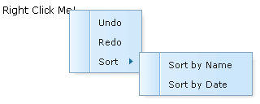
<menupopup id="editPopup">
<menuitem label="Undo"/>
<menuitem label="Redo"/>
<menu label="Sort">
<menupopup>
<menuitem label="Sort by Name" autocheck="true"/>
<menuitem label="Sort by Date" autocheck="true"/>
</menupopup>
</menu>
</menupopup>
<label value="Right Click Me!" context="editPopup"/>
<separator bar="true"/>
<label value="Right Click Me!" onRightClick="alert(self.value)"/>
Dentro de un menupop puede haber cualquier otro componente:
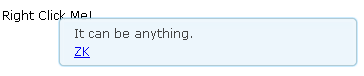
<label value="Right Click Me!" context="any"/>
<popup id="any" width="300px">
<vbox>
It can be anything.
<toolbarbutton label="ZK" href="http://zk1.sourceforge.net"/>
</vbox>
</popup>
Toolbar
Un toolbar define una barra de botones (toolbarbutton).
Ejemplo:
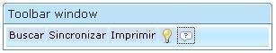
<window title="Toolbar window" border="normal" width="300px">
<toolbar>
<toolbarbutton label="Buscar" />
<toolbarbutton label="Sincronizar" />
<toolbarbutton label="Imprimir" />
<toolbarbutton image="imagenes/light-bulb.png"/>
<toolbarbutton image="imagenes/question.png"/>
</toolbar>
</window>